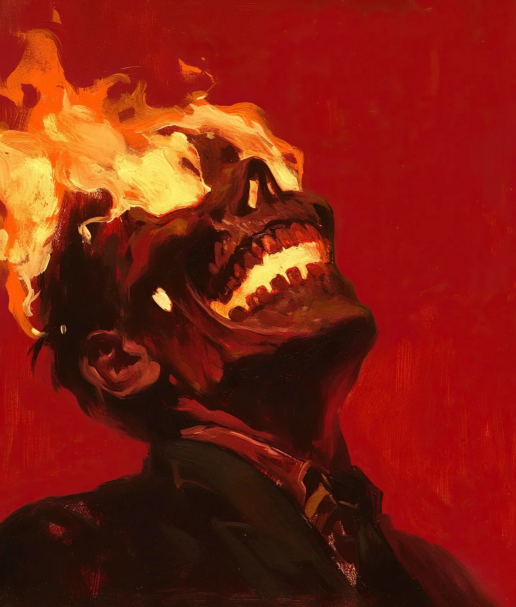

내 두개골은 용광로였고, 다른 사람들의 고통은 그 연료였다.
[My skull was a furnace, and other people’s suffering was the fuel.]
지하철에서 시작됐다. 한 여자가 떨어뜨린 교통카드를 건네줄 때 그녀의 손끝이 내 손에 스쳤다. 그날 아침 어머니의 장례식을 치른 그녀의 슬픔이 - 날것 그대로의 처절한 슬픔이 - 뜨거운 석탄에 휘발유가 부어지듯 내 시냅스를 타고 흘러들어왔다. 고통이 내 눈 뒤에서 타올랐고, 잠시 동안 회전문 디스플레이의 긁힌 플라스틱에 비친 황금빛 불꽃이 춤추는 것을 보았다. 그녀는 서둘러 떠났는데, 걸음을 멈추고 가슴에 손을 얹었다. 마치 무거운 것이 들어올려진 것처럼.
[It started in the subway, when a woman’s fingertips brushed mine as she handed over her dropped metro card. Her grief – raw and ragged from burying her mother that morning – surged through my synapses like gasoline hitting hot coals. The pain blazed behind my eyes, and for a moment, I watched golden flames dance in the scratched plastic of the turnstile’s display. She hurried away, pausing mid-step, her hand touching her chest as if something heavy had lifted.]
나는 그 후 3일 동안 침대에 누워있었다. 식은땀에 젖은 시트를 태우며, 그것이 내 상상이었다고 스스로를 설득하려 했다. 하지만 눈을 감을 때마다, 그 여자의 얼굴이 보였다 - 꺼진 불에서 연기가 피어오르듯 그녀의 슬픔이 들어올려지던 그 순간. 내 피부는 탄 커피 색으로 변해갔다. 마치 내면의 무언가가 천천히 나를 태워가는 것처럼.
[I spent the next three days in bed, burning through sheets soaked in cold sweat, trying to convince myself I’d imagined it. But every time I closed my eyes, I saw that woman’s face - the moment her grief lifted, like smoke rising from a doused fire. My skin had turned the color of burnt coffee, as if something inside was slowly charring me from within.]
일주일이 끝날 무렵, 나는 모든 우연한 접촉이 전이이고, 모든 악수가 점화라는 것을 알게 됐다. 바리스타의 무거운 학자금 대출. 사업가의 무너져가는 결혼생활. 놀이터에서 당한 아이의 수치심. 이 모든 것들이 내면의 지옥불을 부채질했고, 내 꿈은 타오르는 생각들의 타닥거리는 소리로 가득 찼다. 두꺼운 장갑을 끼고 다녀봤지만, 오븐 장갑을 통과하는 열기처럼 고통은 여전히 스며들었다.
[By week’s end, I’d learned that every casual touch was a transfer, every handshake an ignition. A barista’s crushing student debt. A businessman’s crumbling marriage. A child’s playground humiliation. Each one stoked the internal inferno until my dreams were filled with the crackle of burning thoughts. I tried wearing thick gloves, but the pain still seeped through like heat through oven mitts.]
처음으로 그것을 통제하려 했을 때 - 누군가의 고통의 흐름을 조절하려 했을 때 - 나는 커피숍에서 정신을 잃었다. 깨어나보니 컵들은 깨져있었고 사람들은 겁에 질린 얼굴이었으며, 그을린 머리카락 냄새가 공기 중에 진하게 퍼져있었다. 깨진 창문에 비친 내 모습은 새카맣게 탄 잇몸 사이로 뜨거운 철처럼 빛나는 이빨을 보여주고 있었다. 그때 나는 도움이 필요하다는 것을 알았다.
[The first time I tried to control it – to direct the flow of someone’s anguish – I blacked out in a coffee shop. Woke up to broken cups and scared faces, the smell of scorched hair thick in the air. My reflection in the shattered window showed my teeth glowing like hot iron through blackened gums. That’s when I knew I needed help.]
“이건 말이 안 되는데요,” 의사가 체온계를 보며 미간을 찌푸리며 중얼거렸다. “39.5도… 환자분은 지금 헛소리를 하고 있어야 정상인데요.” 그녀는 전화기를 집어들었다. “당장 입원하셔야겠어요.” 나는 이미 문쪽으로 물러서며 장갑을 다시 끼고 있었다. 집중된 비참함으로 병동을 불태우는 건 내가 제일 피하고 싶은 일이었다.
[“This can’t be right,” the doctor muttered, frowning at the thermometer. “39.5°C – you should be delirious.” She reached for her phone. “We need to admit you immediately.” I was already backing toward the door, pulling my gloves back on. The last thing I needed was to set a hospital ward ablaze with concentrated misery.]
몇 주 동안, 나는 버려진 창고들에서 열기를 다스리는 연습을 했다. 시도할 때마다 더 많은 흉터가 생겼고, 내 살갗은 식어가는 용암같은 질감을 띄게 됐다. 불은 계속 번졌다. 처음엔 두통이었다가, 나중엔 티슈에 그을음 자국을 남기는 코피로 발전했다. 내 눈물은 떨어지기도 전에 증발해버렸다. 하지만 사람들은 - 하느님, 사람들은 변했다. 그저 발걸음이 가벼워지고 눈빛이 밝아지는 정도가 아니라, 근본적인 변화였다. 내가 빌린 담배를 통해 수십 년간의 절망을 흡수했던 그 노숙자? 일주일 후에 그를 다시 봤는데, 깔끔하게 면도를 하고 안정된 손으로 구직 신청서를 작성하고 있었다.
[For weeks, I practiced in abandoned warehouses, learning to channel the heat. Each attempt left me more scarred, my flesh taking on the texture of cooling lava. The fire spread. First just headaches, then nosebleeds that left scorch marks on the tissues. My tears evaporated before they could fall. But the people – God, the people changed. Not just lighter steps or brighter eyes, but fundamental shifts. The homeless man whose decades of desperation I absorbed through a borrowed cigarette? I saw him a week later, clean-shaven, filling out job applications with steady hands.]
나는 악수를 피하고 거리를 두는 법을 배웠다. 그 힘이 나를 두렵게 했다. 내가 감히 누구길래 다른 사람의 고통을 가져가는 건가? 감정의 연금술사 노릇을 할 무슨 자격이 있다고? 하지만 그때 마르코가 왔다. 죽은 개 때문에 흐느끼는 내 조카. 내가 막을 새도 없이 그의 작은 팔이 내 허리를 감쌌다. 그의 고뇌가 역화처럼 들이닥쳤고, 이번에는 뭔가 중요한 것이 무너지는 걸 느꼈다.
[I learned to dodge handshakes, to keep my distance. The power terrified me. Who was I to take away someone’s pain? What right did I have to play emotional alchemist? But then came Marco, my nephew, sobbing over his dead dog. His small arms wrapped around my waist before I could stop him. His anguish hit like a backdraft, and this time, I felt something crucial give way.]
불이 탈출했다.
[The fire escaped.]
주황빛과 금빛이 아름답고도 끔찍한 급류가 되어 내 입에서 쏟아져 나왔다. 내 턱은 뱀처럼 벌어졌고, 불꽃은 뒤틀린 후광처럼 내 머리를 둘러쌌다. 마르코는 넋이 나간 채 쳐다보았다. 하지만 이제 그는 웃고 있었다. 정말로 웃고 있었다. 뒷마당에서 버디를 뻣뻣하고 차갑게 식은 채로 발견한 이후 처음으로.
[It poured from my mouth in a torrent of orange and gold, beautiful and terrible. My jaw stretched wide, unhinged like a snake’s, as flames crowned my head like a twisted halo. Marco stared, transfixed. But he was smiling now, really smiling, for the first time since he’d found Buddy stiff and cold in the backyard.]
그때 나는 내 존재 이유를 깨달았다. 어떤 사람들은 그릇이 되기 위해 태어난다. 어떤 사람들은 불타기 위해 태어난다.
[That’s when I understood my purpose. Some people are meant to be vessels. Some are meant to burn.]
이제 나는 공원에 앉아있다. 장갑을 벗고 손을 펼친 채로. 절박한 사람들이 나를 찾아온다. 그들도 이름 붙일 수 없는 무언가에 이끌려서. 한 번의 접촉으로 나는 모든 것을 가져간다 - 그들의 중독, 두려움, 산산조각 난 꿈들을. 매번 전이가 일어날 때마다 불꽃은 더 높이 치솟지만, 나는 더 이상 그것과 싸우지 않는다.
[Now I sit in parks, gloves off, hands open. The desperate ones find me, drawn to something they can’t name. One touch, and I take it all – their addictions, their fears, their shattered dreams. The flames rise higher with each transfer, but I don’t fight them anymore.]
내 뇌는 세상의 슬픔을 위한 용광로다. 내 두개골은 고통이 연기가 되어 사라지는 도가니다.
[My brain is a blast furnace for the world’s sorrows. My skull is the crucible where suffering turns to smoke.]
어제, 한 여자가 내 옆에 앉았다. 말기 진단을 받았다는 종이를 떨리는 손에 구겨쥐고 있었다. 우리의 손가락이 닿았을 때, 불길이 너무나 강렬하게 치솟아서 우리 둘 다 집어삼킬 것 같았다. 처음으로 나는 그녀의 눈에 비친 내 모습을 보았다 - 살아있는 불꽃으로 둘러싸인 내 머리, 석탄처럼 새까만 피부, 고통과 황홀경으로 일그러진 입. 하지만 나는 계속 붙들고 있었다. 그녀의 손이 안정되고 눈빛이 맑아질 때까지 두려움과 절망이 내게로 흘러들도록 놔두었다.
[Yesterday, a woman sat beside me. Terminal diagnosis, the paper crumpled in her trembling hands. When our fingers met, the fire roared so bright I thought it would consume us both. For the first time, I saw my reflection in her eyes – my head wreathed in living flame, skin black as coal, mouth stretched in a rictus of agony and ecstasy. But I held on, let the fear and despair flow into me until her hands steadied and her eyes cleared.]
가끔, 한밤중에 불이 잉걸불로 줄어들 때면, 이 몸이 얼마나 오래 이런 열기를 견딜 수 있을지 궁금해진다. 하지만 아침이 오면, 더 많은 손들이 뻗어오고, 더 많은 고통이 해방을 찾아오며, 영원한 연소를 위한 더 많은 연료가 찾아온다.
[Sometimes, late at night, when the fire dims to embers, I wonder how long this body can contain such heat. But then morning comes, and with it, more hands reaching out, more pain seeking release, more fuel for the eternal combustion.]
나는 그들이 불타지 않도록 대신 탄다.
[I burn so they don’t have to.]
매일 밤 거울 속에서 내 이빨은 달궈진 숯처럼 빛나고, 나는 불타는 미소를 짓는다. 어딘가에서 누군가가 더 편히 잠들 것을 알기에. 그들의 악마들은 이제 내 영원한 불꽃 속에서 춤추고 있다.
[Each night my teeth gleam like hot coals in the mirror, and I smile my burning smile, knowing that somewhere, someone sleeps easier, their demons now dancing in my eternal flame.]